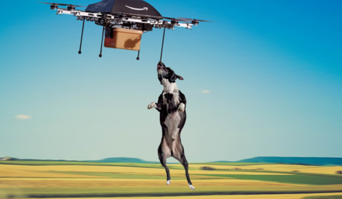
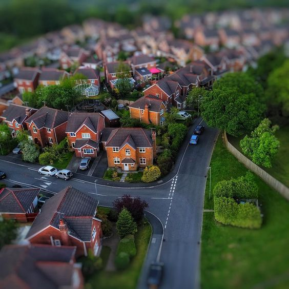

| Pages |
|---|
These kinds of drones can be used to:
Take beautiful pictures
Walk the dog

Watch the house

The pros are that you'll have more free time and you'd be less stressed.
The cons are that the drone could get out of control and lose the dog. Also it is not guaranteed to do what it is programmed all the time